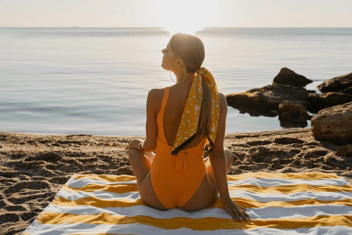
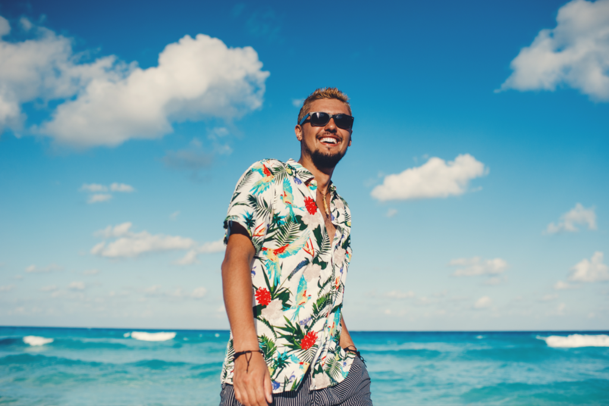

Mono was born out of a simple love for sunshine.
We’re a small team dedicated to capturing that "out of office"
feeling in every stitch. Whether it’s a breezy linen set or your new
favourite getaway outfit, our clothes are made for the moments that
feel like a holiday.
While we design for the world's sunniest shores, our heart is right here in
Turkey, quite a good bit from the shore. Longing to be one with the beach
keeps us inspired. It’s where we sketch our first ideas and where our small
team gathers every morning to make sure every order feels like a gift to your
future self.
We might be all about relaxed vibes, but we’re obsessed with getting things
right. We use data and analytics to listen to what you actually love.
By looking at what’s trending and what you're reaching for most,
we make sure we aren't just making "more" clothes—we're making the right
clothes. This "less is more" approach helps us stay sustainable, reducing
waste by focusing on the pieces you’ve told us (through the numbers!)
you can’t live without.
Our branding is a reflection of summer itself: clean, bright, and effortless.
We believe your outfit shouldn't compete with the scenery. That’s why our
current aesthetic focuses on bright warm vibrant colour like sunset red, or
bleached yellow and baby blue to really relate with a summer vibe and beachy
looking. With silhouettes that feel as light as air. When you see the Mono
logo, we want you to feel that first hit of warm air when you step off a plane.
Welcome to Mono—your summer starts here.
About MONO. The number one upcoming summer clothing brand..



Find us here!
The History of MONO
The Beginning
Day one
Finding Our Rhythm
Where we are now
Our Future Goals
It started with a single problem: finding the perfect, fuss-free
outfit for a summer weekend. Our founders rodrick hammelton spent months sketching
designs and sourcing fabrics that could handle the heat without
losing their shape. The name Mono was chosen—a nod to our focus on
singular, high-quality essentials.
We officially opened our virtual doors in 06/23/2017.
Operating out of a small studio in Turkey, we launched
our first "Sun & Sand" collection. The response was immediate, and
we quickly realized we weren’t the only ones looking for a simpler
way to dress for the sun.
As we grew, we stopped guessing and started listening. This was
when we integrated advanced analytics into our design process. By
looking at what our community truly loved, we refined our branding to
the clean, sun-bleached aesthetic you see today. We stopped chasing
fast-fashion trends and started perfecting the "Mono Look."
Today, Mono is more than just a clothing brand; it’s a community of
sun-seekers. We are still based in Turkey however we did under go
an expansion as we wish to expand our company so more people could
enjoy it. Using data-driven insights to ensure our production remains sustainable
and intentional. Every new drop is a direct result of your feedback
and the "endless summer" lifestyle we all share.
Sustainability Milestone:
By 2030, we aim to transition 100% of our core collection to certified organic or recycled fabrics, using our analytics to minimize overproduction and waste.
Mono On the Move:
We are planning our first series of summer pop-up shops in coastal cities, bringing the "Mono experience" from the screen to the seaside.
Global Sun-Chasing:
We’re expanding our logistics to ensure that no matter where the sun is shining in the world, Mono can get a breezy outfit to your doorstep faster and more efficiently.
By 2030, we aim to transition 100% of our core collection to certified organic or recycled fabrics, using our analytics to minimize overproduction and waste.
Mono On the Move:
We are planning our first series of summer pop-up shops in coastal cities, bringing the "Mono experience" from the screen to the seaside.
Global Sun-Chasing:
We’re expanding our logistics to ensure that no matter where the sun is shining in the world, Mono can get a breezy outfit to your doorstep faster and more efficiently.